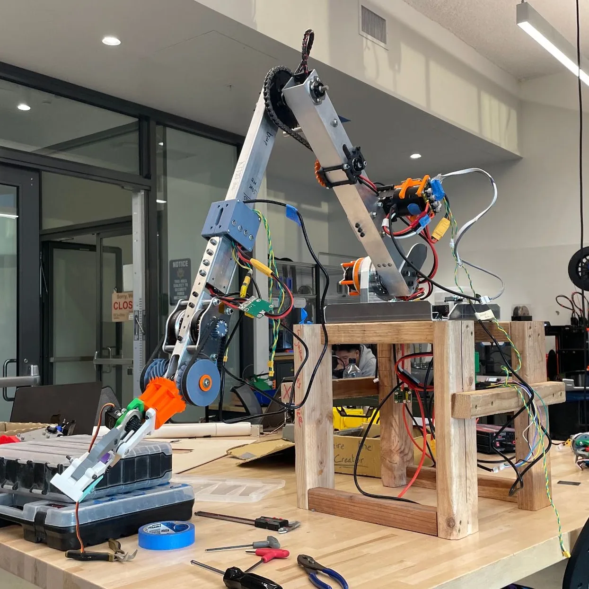
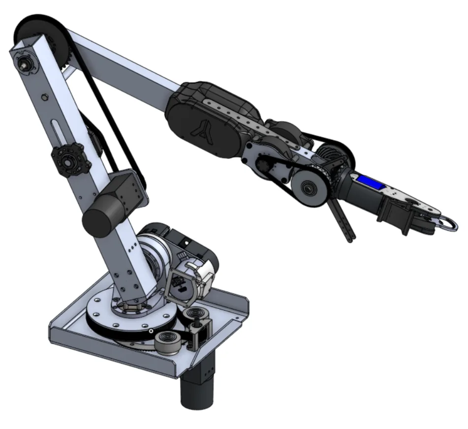
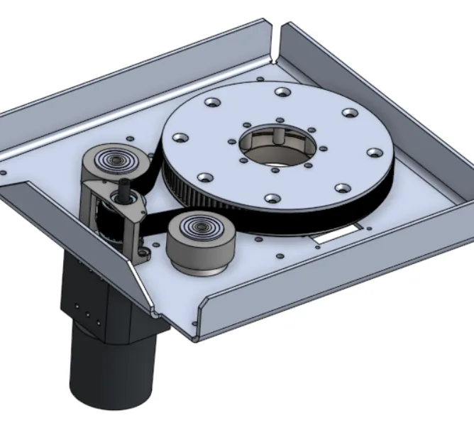
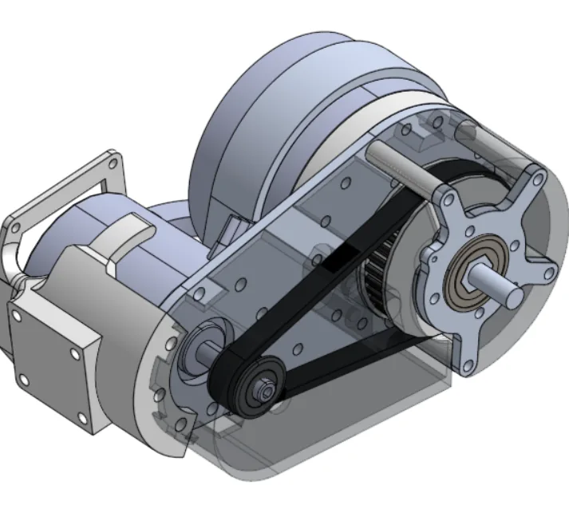
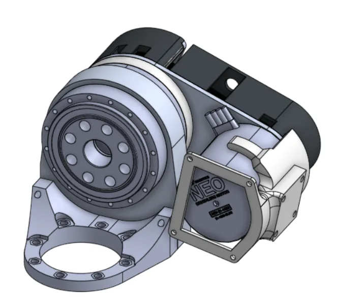
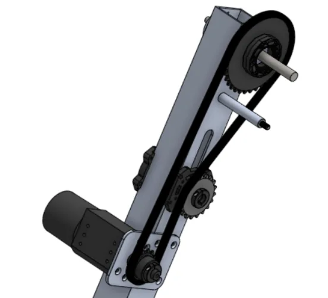
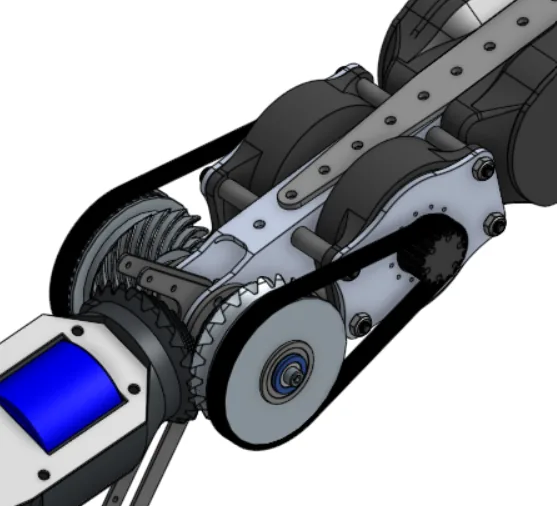
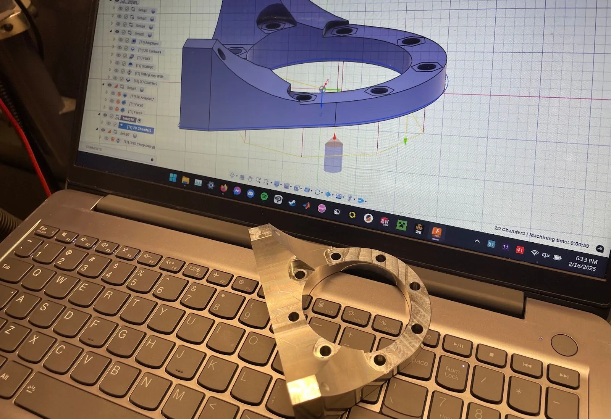

5-DOF custom robotic arm
A medium-format, five-degree-of-freedom robotic arm built to withstand harsh desert conditions and hold up to 5 kg at full extension indefinitely. Developed as mechanical lead for UC San Diego’s University Rover Challenge team.
- Role
- Mechanical Lead
- My scope
- Base, shoulder, and elbow joints; wrist and hand iterations
- Payload
- 5 kg at full extension
- Team
- Yonder Dynamics, URC Mars rover
Backlash reduction at affected joints (0.75° to 1 arcmin) after replacing planetary gearboxes with harmonic drives.
Reach, with enough precision for autonomous keyboard interaction.
Held at full extension indefinitely.
Students on the mechanical team I led and trained.
System acceptance review
The system acceptance review of the full rover for the annual University Rover Challenge. Footage and explanation of the arm begin at 1:05.

Joints I designed
The arm was a collaborative project across the team. I was responsible for the base, shoulder, and elbow joints, and handled revisions and iterations for the wrist and some hand prototypes.






